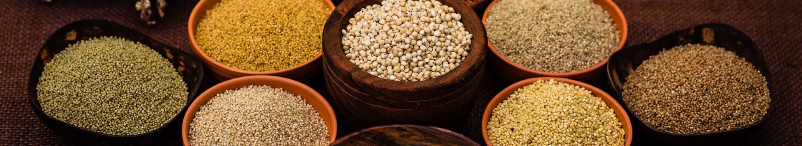
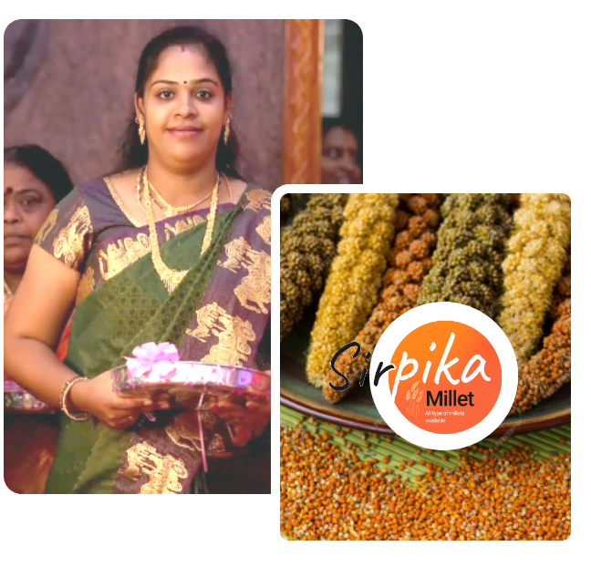
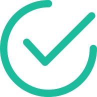

About Us

About Sirpika Millets!
Sirpika Millets has taken steps to restore and bring to you today's traditional whole grain foods essential for a healthy life
I am Vidhya founder of Sirpika Millets, and I have been dedicated to working with millet-based products for
the past five years.
My journey began in 2021 when I started incorporating millets into my own diet, driven by a desire to
explore their health benefits. This personal experience inspired me to dive deeper into the world of
millets, leading me to spend a year researching their nutritional value and potential. With the unwavering
support of my husband, we embarked on a mission to create value-added millet products.
Starting a business focused on millets was not without its challenges. We faced significant hurdles in
educating people about the benefits of millets and promoting their adoption as part of a healthy diet.
However, our passion for these traditional grains kept us motivated, and we persevered.
Brand Mission
At Sirpika Millets, our aim is to restore and bring to you the traditional whole grains that are essential
for a healthy life. We are committed to reconnecting people with time-honored foods that promote wellness
and vitality in today’s world. Our millet-based products are a testament to this mission, as we strive to
make these nutritious grains accessible to everyone.
-

We offers a wide variety of Raw Millets
-
We offers a wide variety of MIllet Flakes & Museli
-
We offers a wide variety of Noodles & Pasta
Why Sirpika Millets?
Sirpika Millets
Natural Goodness for Your Health.
Inspired By
Inspired by Nammazhvar Ayya dedication to organic farming, we aim to bring you the purest millets.
Our Journey
We started this business full-time to provide healthy, chemical-free millets, believing in the power of natural food.
Future Plans
We plan to expand our product range and collaborate with more local farmers to bring you the best organic produce.
Achievements
Partnered with over 50 local farmers. - Awarded 'Best Organic Product'.
Our Target
To become a leading provider of organic millets and promote healthy lifestyles.
Instagram feed